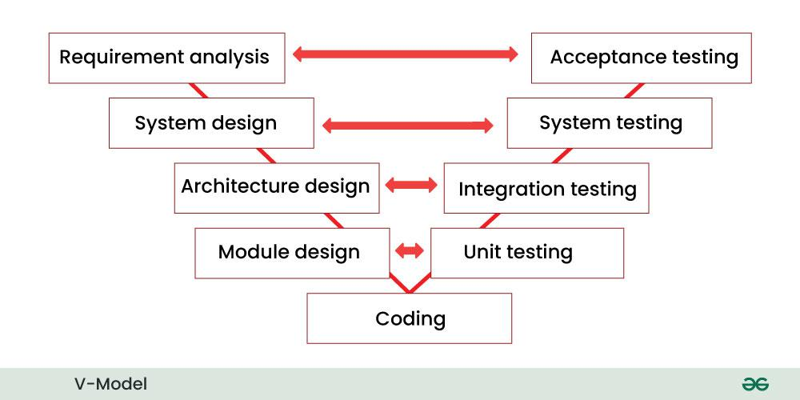

2.13 SDLC V-Model
The V-Model (Verification and Validation model) extends Waterfall by mapping each development phase to a corresponding testing phase. The left side of the "V" represents development activities; the right side represents testing activities that verify those development stages.

Verification vs Validation
- Verification asks whether we are building the product right. It checks conformance to specifications through reviews, inspections, and unit or integration testing.
- Validation asks whether we are building the right product. It checks that user needs are met through acceptance testing and user acceptance testing (UAT).
Phase pairs (left → right)
| Development (verification) | Testing (validation of that stage) |
|---|---|
| Requirements analysis | Requirements analysis on the left side of the V is verified by acceptance testing on the right. |
| System design | System design is paired with system testing to confirm that the overall system meets its specification. |
| Architecture / high-level design | Architecture or high-level design is paired with integration testing to verify that subsystems work together. |
| Module design | Detailed module design is paired with unit testing to verify each component in isolation. |
Advantages and disadvantages
- Advantages. Testing is planned from the start, traceability links each requirement to tests, and the model suits safety-critical and regulated systems.
- Disadvantages. The V-Model shares Waterfall’s rigidity, provides no early working software, makes late requirement changes expensive, and requires maintaining testing documents alongside design documents.
Exam question — V-Model
Q: Explain the V-Model. Differentiate verification and validation. Map development phases to test phases.
Model answer points:
- Describe the V-Model as Waterfall with a parallel testing arm: the left side is development and the right side is testing.
- Define verification as building the product correctly against specifications, and validation as building the product the user actually needs.
- Map phase pairs: requirements with acceptance testing, system design with system testing, high-level design with integration testing, and module design with unit testing.
- State advantages (early test planning and traceability) and disadvantages (inflexibility, late delivery, and costly changes).